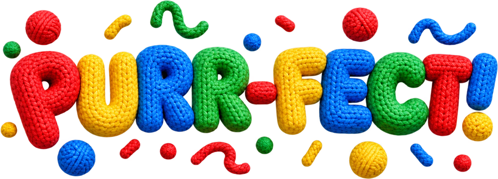
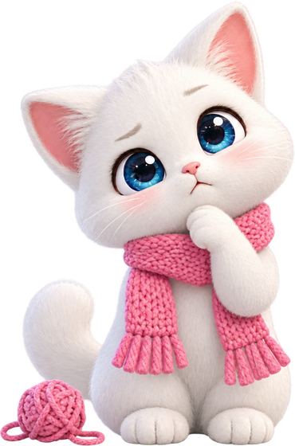

Tap a spool to pick up the wool on top, then tap another spool to wind it on. Wool only winds onto the same colour or an empty spool.
The twist: gather a whole colour on one spool and Mochi knits it straight into the scarf. That spool comes back empty, so finishing colours early gives you room.
Empty every spool to finish the scarf. Beat par (+2) for three stars.
Little bobbins hold less wool. Short strands have only three bands. Fuzzy wool hides its colour until it reaches the top.
100 levels in ten chapters. Every tenth level is a HARD finale: fuzzy wool, one spare spool and, later on, a bobbin.
Daily Puzzle: one fresh board a day, the same for everyone. Each weekday has its own twist and Sunday is the big one. Play every day to build a 🔥 streak.
A Lightbourne Labs kitten game · sibling of Wool Flow
Level 1First Stitch
0moves · par 0

★★★
You finished the scarf in 12 moves (par 11).

Mochi's tangled!
There are no useful moves left. Undo a few steps, add a spool or start over.